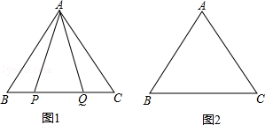
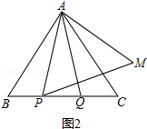

2016年北京市中考数学试题 · 数学解答题 第28题 · 对应解析
28．（7分）（2016•北京）在等边△ABC中，

（1）如图1，P，Q是BC边上的两点，AP=AQ，∠BAP=20°，求∠AQB的度数；
（2）点P，Q是BC边上的两个动点（不与点B，C重合），点P在点Q的左侧，且AP=AQ，点Q关于直线AC的对称点为M，连接AM，PM．
①依题意将图2补全；
②小茹通过观察、实验提出猜想：在点P，Q运动的过程中，始终有PA=PM，小茹把这个猜想与同学们进行交流，通过讨论，形成了证明该猜想的几种想法：
想法1：要证明PA=PM，只需证△APM是等边三角形；
想法2：在BA上取一点N，使得BN=BP，要证明PA=PM，只需证△ANP≌△PCM；
想法3：将线段BP绕点B顺时针旋转60°，得到线段BK，要证PA=PM，只需证PA=CK，PM=CK…
请你参考上面的想法，帮助小茹证明PA=PM（一种方法即可）．
【解答】解：（1）∵AP=AQ，
∴∠APQ=∠AQP，
∴∠APB=∠AQC，
∵△ABC是等边三角形，
∴∠B=∠C=60°，
∴∠BAP=∠CAQ=20°，
∴∠AQB=∠APQ=∠BAP+∠B=80°；
（2）如图2，∵AP=AQ，
∴∠APQ=∠AQP，
∴∠APB=∠AQC，
∵△ABC是等边三角形，
∴∠B=∠C=60°，
∴∠BAP=∠CAQ，
∵点Q关于直线AC的对称点为M，
∴AQ=AM，∠QAC=∠MAC，
∴∠MAC=∠BAP，
∴∠BAP+∠PAC=∠MAC+∠CAP=60°，
∴∠PAM=60°，
∵AP=AQ，
∴AP=AM，
∴△APM是等边三角形，
∴AP=PM．
